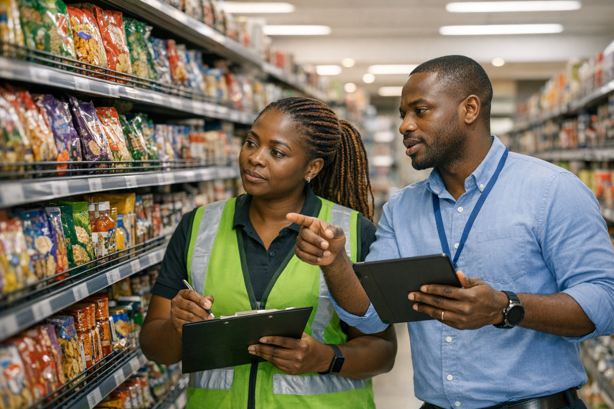
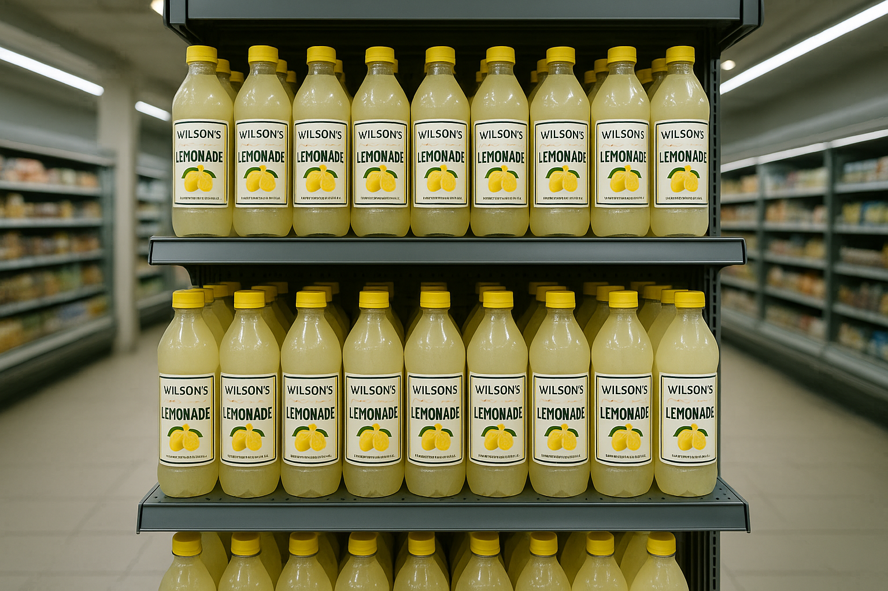
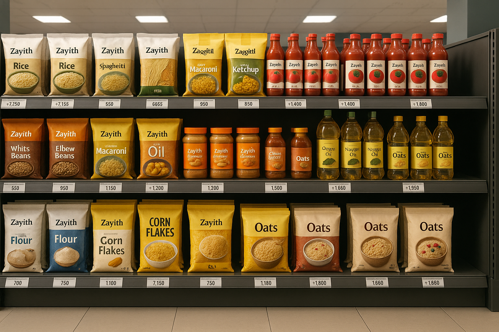
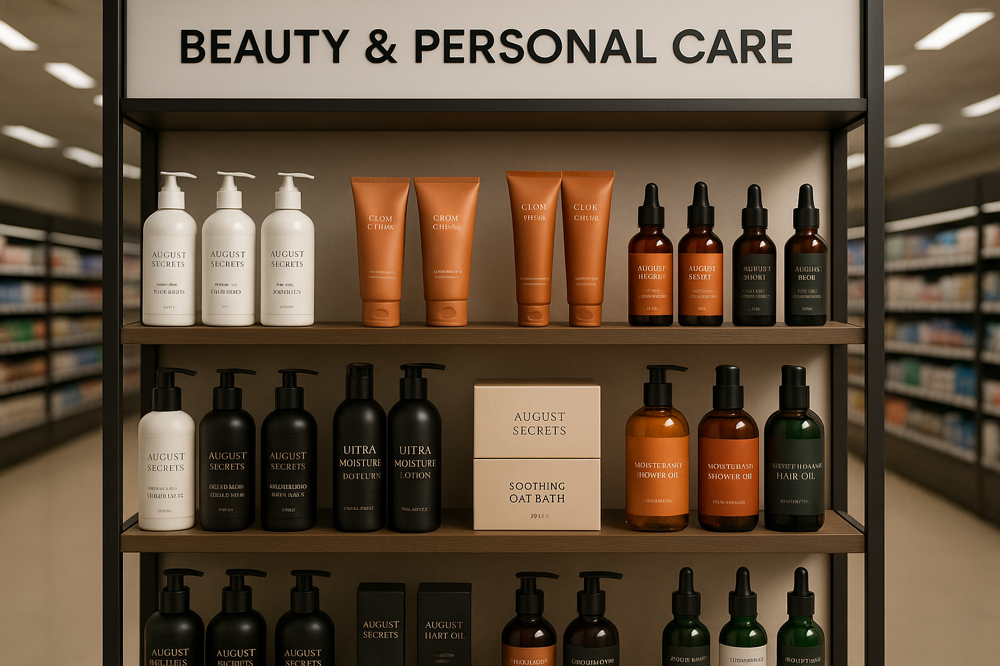
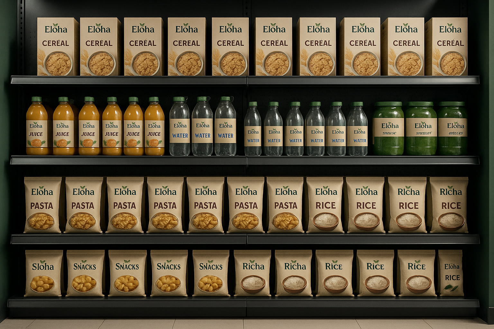

Case Studies
Real brand growth, separated clearly.
Explore each DALA case study one brand at a time.
Each partner story now lives on its own page, with a consistent structure covering the challenge, the solution, what DALA did, the results, and the final impact summary.

A premium retail execution story should be easy to navigate, easy to read, and specific to the brand behind the results.


Wilson's Lemonade
Structured retail execution that turned fragmented demand into a 350-store modern trade footprint.
₦221.7M revenue350 stores1.5 years
View Case Study


Zayith Food Company
Execution support that helped revenue build steadily while modern retail expansion accelerated.
₦138M revenue173 storesPeak later months
View Case Study


August Secrets
Rapid, credible modern trade growth driven by stronger shelf execution and weekly visibility.
₦30.8M revenue106 stores1 year
View Case Study


Eloha
A launch story built around fast onboarding, disciplined execution, and quick retail presence.
₦3.8M revenue83 stores7 months
View Case Study